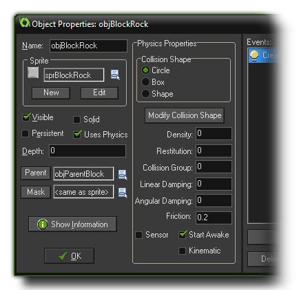
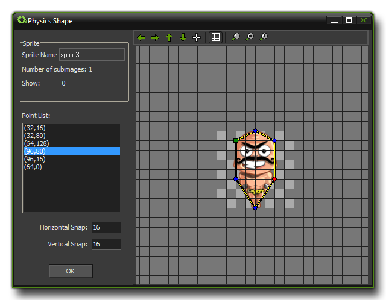
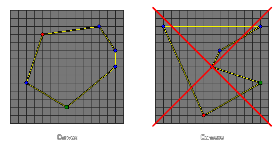

When you first create a new object resource, there is a checkbox at the bottom on the left marked Uses Physics, which is normally not checked. Selecting this option will radically change the behaviour of your object when an instance of it is placed in a room, as this switches on the object's physical properties and means that its "traditional" movement and collision functions are no longer valid (but only when the room it is placed on is also marked as being a physics room. See - More About Rooms: Physics). When you check this, the object resource window expands to show the following: 
With the normal collision system you had your collisions based off of the mask of the sprite assigned to the object, but with the physics switched on, this is no longer the case. We need to assign a mask to the object ourselves (actually, this is really a "fixture", see The Physics Functions for more information), which can either be a circle, a rectangle or a polygon shape that you yourself define. Once you have selected the shape you can then click on the Modify Collision Shape button which will open the following window:  This looks similar to the Path Editor, and functions in much the same way, however, depending on the mask you have chosen, it can be rather more restrictive:
- If you have a circular mask, then you can only pull any of the path points to make the circle diameter larger or smaller
- If you have rectangular mask, then you can move any of the four corners, but the corresponding ones will adjust position automatically to always maintain a rectangle
- If you have a custom mask, it must have a minimum of 3 and a maximum of 8 points to it, and it must be convex (see image below).

Once you have set up your shape, you then need to define the basic physical properties that your object is to have. These are configured by changing the following parameters:
- Density: The density of something is defined as its mass per unit volume, which basically means how much mass is crammed into the space it takes up in the world. So, a balloon would have a low density as it has little mass that occupies a large space, while a lead bar would have a high density as it has a great mass, yet occupies little space. In the GameMaker: Studio 2D physics world mass is calculated automatically for you from the values you input for the density and by the surface area of the shape you define for the fixture. This will have a direct impact on how much inertia a fixture has as well as how it reacts to collisions and forces, so if you make a small shape with a high density it will have a very large mass (like a bar of lead), but if you define a large shape with a low density it will have a much smaller mass (like a ballon).
- Restitution: In physics, restitution is defined as "the return of an object or system to its original state after elastic deformation", but as the fixtures in the GameMaker: Studio are really rigid bodies and cannot be deformed, restitution is really a way of saying how "bouncy" the fixture is. This setting will affect how much an object "bounces" when it collides with other objects and is co-dependant on other forces that act on the instance like gravity and friction.
- Collision Group: By default, the collision group for all physics objects is 0, and this means that they will interact as normal, which means they must have a collision event to interact (a simple comment will do to trigger the collision) otherwise no collision will be registered. However, you can also specify that an object should belong to a specific collision group. Now, by assigning objects to a positive collision group (ie: three objects are all in group "2") you are telling GameMaker: Studio that instances of these objects should always collide, even if they have nothing in their collision event, obeying the physical properties that you have assigned them and the room they are in. Conversely, if you have objects with a negative collision group (ie: four objects assigned "-1"), you are telling GameMaker: Studio that these should never collide, and any collision events between them will be ignored. Note: Using collision groups dramatically increases the processing required by the physics system and should be used only when absolutely necessary, and you should have as few groups as possible!
- Linear Damping: Damping is used to reduce the physics world velocity of an instance, and differs from friction in that friction only occurs when two instances with collision shapes (fixtures) are in contact. Damping is also much cheaper to simulate than friction, but please note that damping is not a replacement for friction; the two effects can, and should, be used together.
- Angular Damping: If you think about any rotating object in the "real world", unless it has a motor or is in space, it slows down over time due to the influence of external forces (like friction with the air around it). We can use set this option to simulate this effect and reduce the velocity of rotation of instances in the physics world, as, without it, any rotating instance would continue to rotate infinitely.
- Friction: Friction is the force that resists the relative motion of material elements sliding against each other, which in the GameMaker: Studio physics world, translates as the loss of momentum caused by the collision of two instances with fixtures bound to them. So, when two instances collide, their motion is affected by this value, with a high friction causing a larger loss of momentum than a lower value.
Finally there are three extra options that can flagged as on or off for your fixture, Sensor, Start Awake and Kinematic. Each of these flags will change the behaviour of your fixture in the following ways:
- Sensor - By checking this box, you are telling GameMaker: Studio to basically "ignore" the physical properties of the object, but still return a collision event with the objects around it. in this way you can have an instance with no physical presence in the room, but which can react to the collision of another instance, like the player, and do something in turn, like open a door, or trigger some sort of action in another place in the room.
- Start Awake - This is checked by default and represents the initial "state" of the fixture at the start of the room it has been placed in. Normally you want it to be awake (ie: participating in the physics world) right from the start, but sometimes this can lead to certain instabilities and unwanted effects due to the abrupt start of the physics simulation. To avoid these effects, you can un-check this flag and the instance will be created with the fixture asleep, and it will not participate in the physics simulation unless something acts upon it.
- Kinematic - There will be certain instances in a physics based game which you want to move around but do not wish to be acted on by forces such as gravity, nor forces incurred by collisions with dynamic objects (think of moving platforms in a platform game, for example). For such objects simply setting the density of the fixture to 0 will mean that the physics will assume that the object is intended to be static and it will not react at all to anything. However, checking this box will make a static object kinematic and although it will be unaffected by collisions and gravity, it can still be moved around or rotated using the appropriate variables.
NOTE: A sensor fixture will fire off the collision
event when the collision first occurs only, meaning you
don't get a stream of collision events as the two bodies continue
to overlap (which is what would traditionally occur). If they stop
overlapping and overlap subsequently there will be another
collision event triggered.